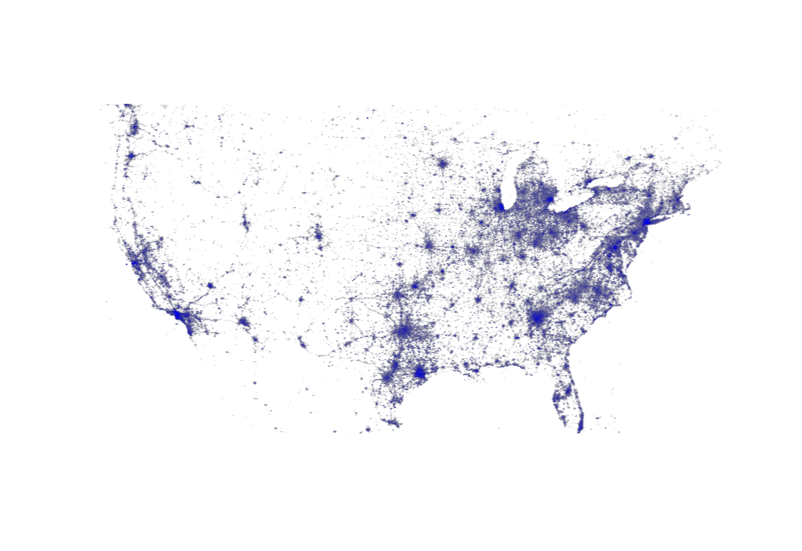

canary
The inactivity early warning system for Twitter
Selected users from the training data
{% for user in users %}
{% endfor %}
Predict whether a Twitter user will stop tweeting 3 months from now:
